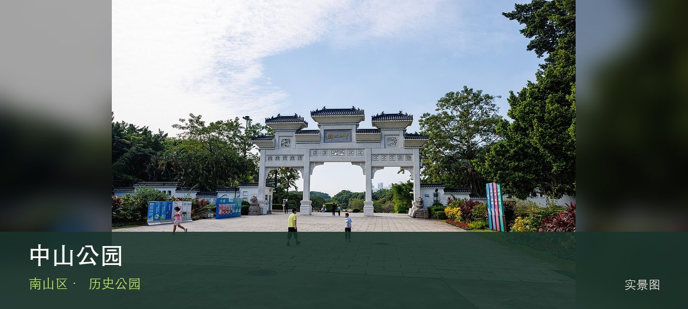

适合谁
适合建筑、地方史和社区观察者；参观时须尊重居民、宗教礼仪与生产秩序。

SHENZHEN GUIDE · 074
南头 · 历史公园
中山公园位于南头古城北侧，古城墙遗迹、孙中山纪念元素和成熟老树叠在一座老公园中，是连接南头古城历史与居民日常的缓冲地带。这处地点的内容并不靠规模取胜，南头古城墙遗迹和孙中山纪念景观才是最值得核对的现场证据。阅读这处地点要把南头古城墙遗迹与孙中山纪念景观放回仍在使用的街巷或社区中，不把历史空间当成布景。先看公开区域，再按居民生活、礼仪和开放边界调整停留，不进入封闭建筑。
WHY GO
适合建筑、地方史和社区观察者；参观时须尊重居民、宗教礼仪与生产秩序。
把中山公园拆成两段：先看南头古城墙遗迹，有余力再看孙中山纪念景观；若开放范围与旧攻略不一致，以现场标识为准。
公共交通先到南头古城北侧片区，再以中山公园公开参观入口为终点；多入口地点须按计划游线选择入口，并预先锁定返程站点。
车辆停在中山公园外围正规公共停车场后步行进入；不驶入窄巷，不占居民门口、作业区或消防通道。
10 月至次年 4 月步行较舒适；夏季避开正午，雨天留意石板、台阶和老建筑周边湿滑。
NEARBY IDEAS